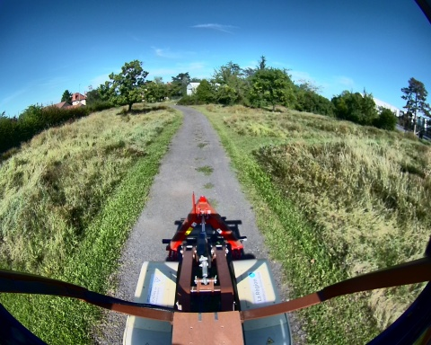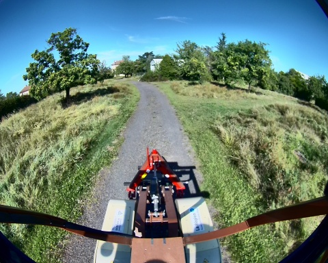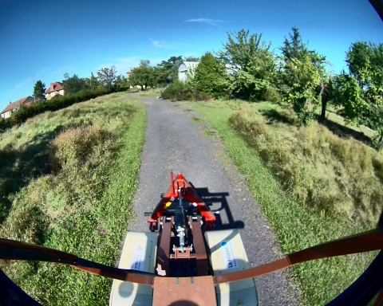
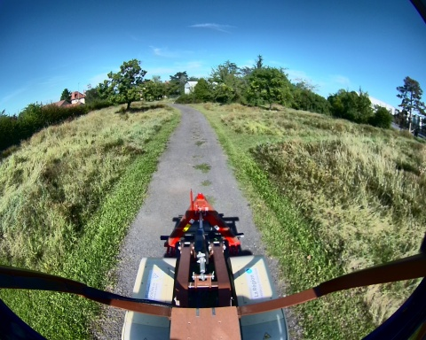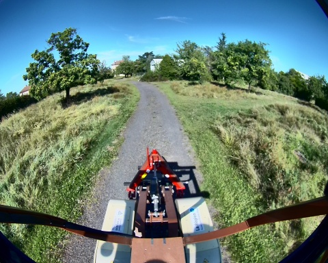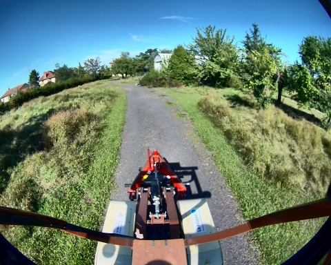
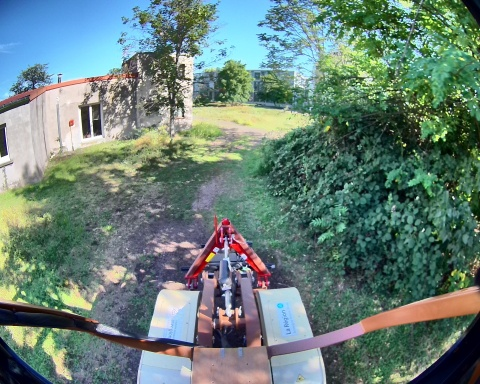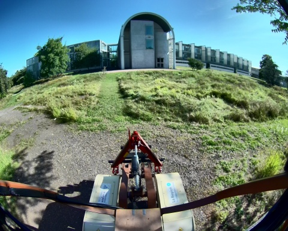


Chemin complet : /data/synchro_data/Innodura/Agrivia/Données/2024_bag/slam_icp_foret_a
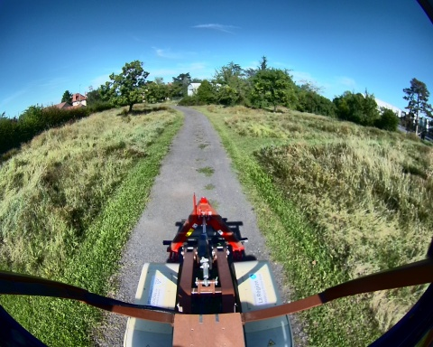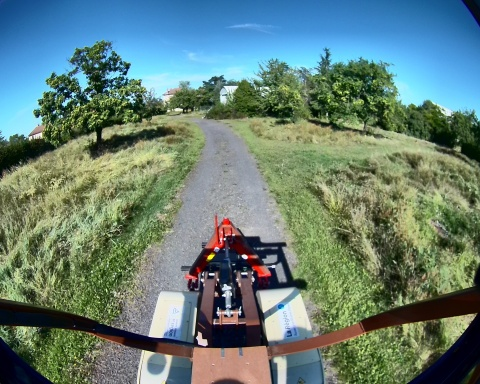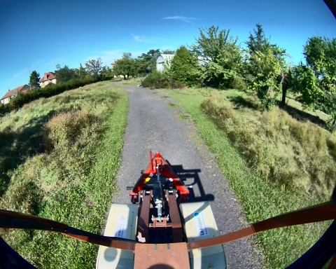
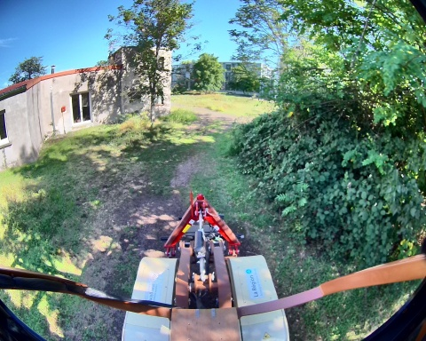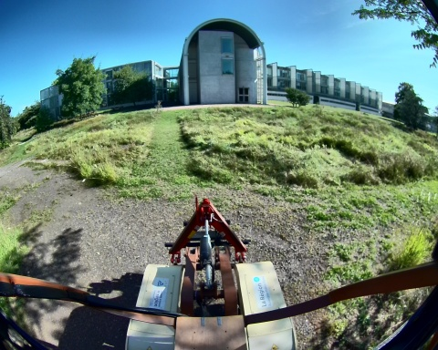
Files: slam_icp_foret_a_0.db3
Bag size: 8.2 GiB
Storage id: sqlite3
Duration: 203.782360993s
Start: Aug 27 2024 16:57:52.917797186 (1724770672.917797186)
End: Aug 27 2024 17:01:16.700158179 (1724770876.700158179)
Messages: 2000
Topic information: Topic: /alpo/camera/image_synchro | Type: sensor_msgs/msg/Image | Count: 999 | Serialization Format: cdr
Topic: /tf_static | Type: tf2_msgs/msg/TFMessage | Count: 3 | Serialization Format: cdr
Topic: /alpo/lidar/pointcloud_synchro | Type: sensor_msgs/msg/PointCloud2 | Count: 998 | Serialization Format: cdr